配色方案对比
同一批原型、同一套布局，只切换颜色 token。默认打开是「亮橙」；在页面地址后加 ?theme=deep 或 ?theme=ink 可实时切换。
亮橙 · 默认
原设计稿的视觉方向。白字压亮橙，暖度高、品牌感最强。
对比 2.35 / 2.80 · 不达 AA深橙 · AA
白字保留，品牌渐变加深为焦糖橙。整体更稳，合规。
对比 5.18–7.31 · AA亮橙 + 深墨字 · AA
保留亮橙渐变，把按钮文字改为深墨色。品牌最亮，文字最清晰。
对比 5.9–7.4 · AA「亮橙」是视觉参考，白字在亮橙上只有 2.35–2.80:1，不满足 WCAG AA；「深橙」与「亮橙+深墨字」均满足 AA。三套方案都由 shared-design-tokens/tokens.json 与 themes.json 驱动，不是三份手改 CSS。
页面
亮橙 · 默认
深橙 · AA
亮橙 + 深墨字
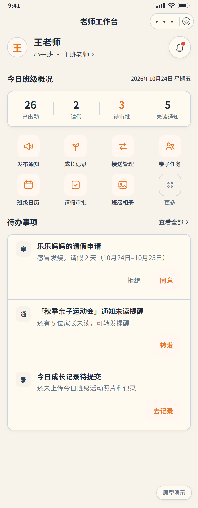

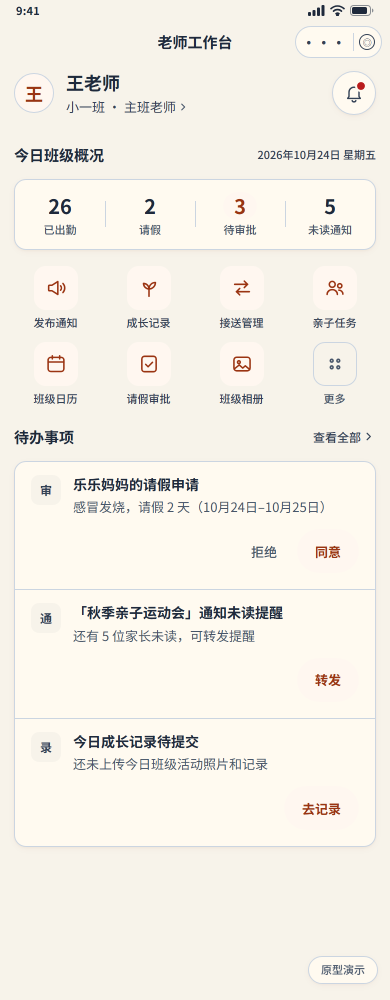
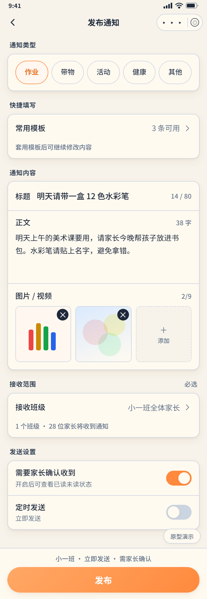
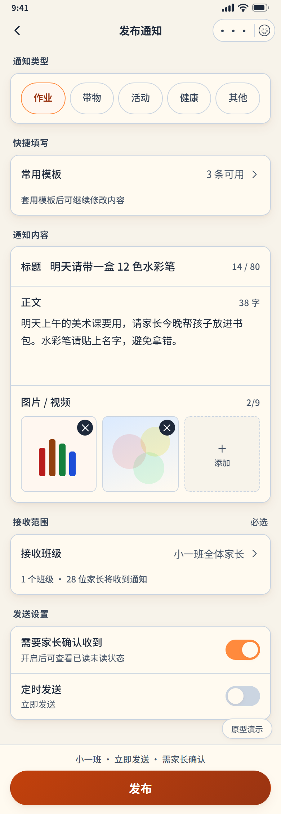
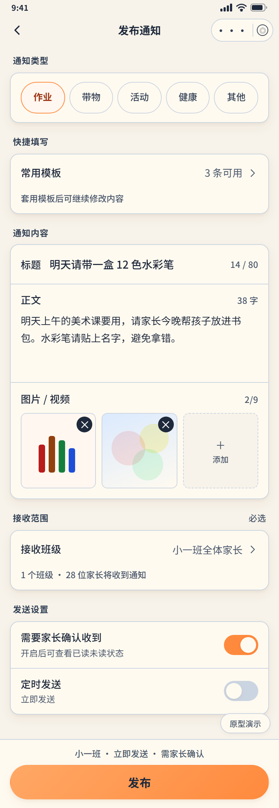
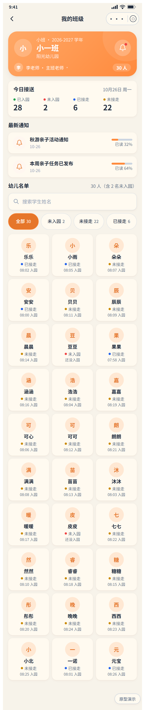
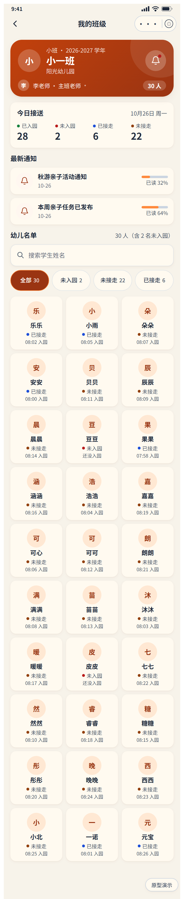
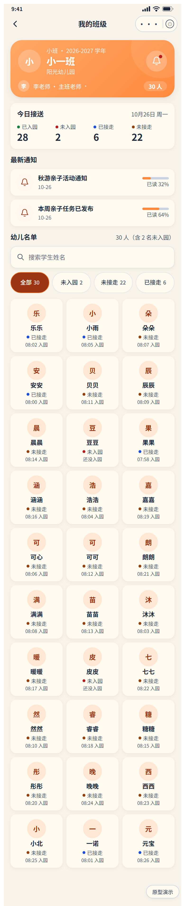
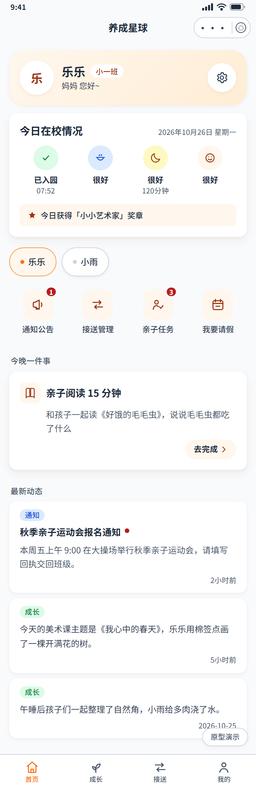

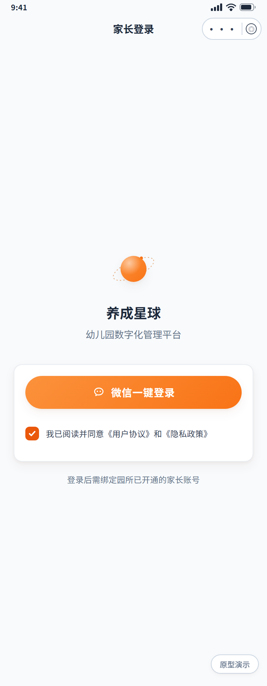
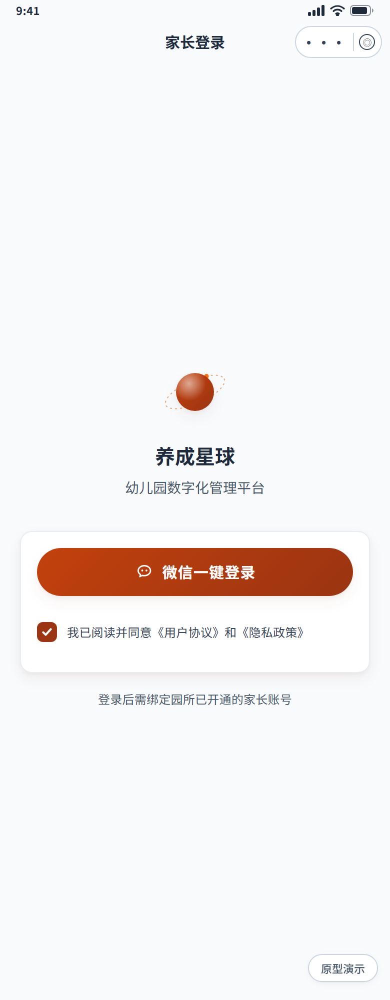
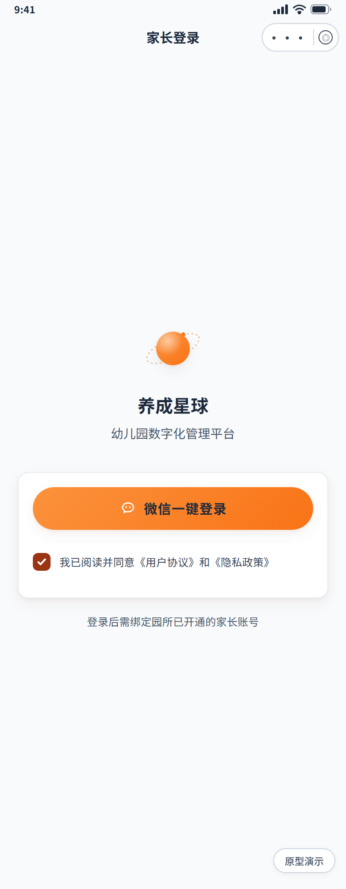
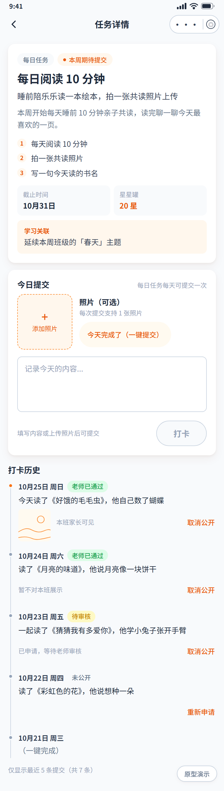
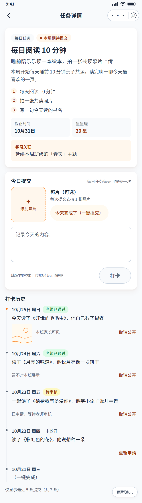

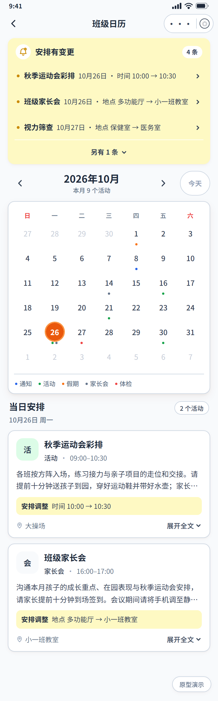

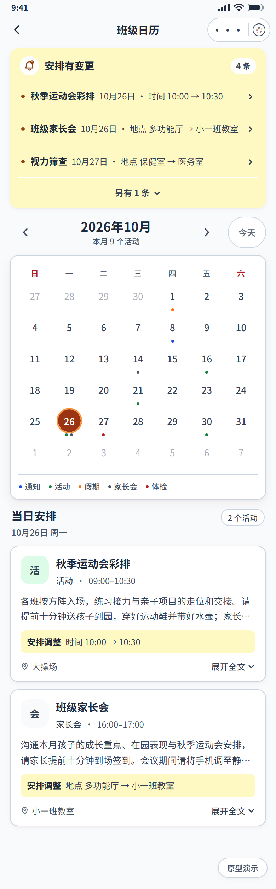